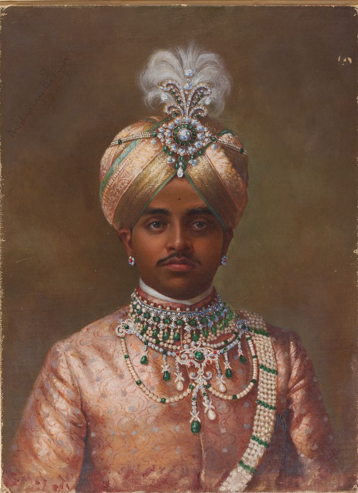
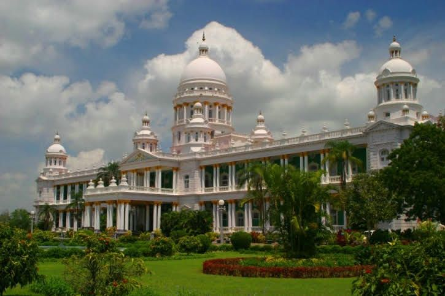
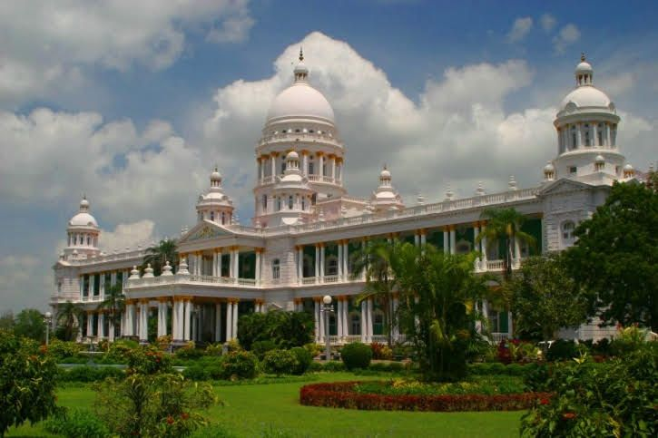

📜 Rich History
Over 550 years of royal legacy under the mighty Wodeyar Dynasty

1399 CE
Foundation: Yaduraya Wodeyar founded the kingdom under the Vijayanagara Empire, beginning a dynasty that would rule for over 5 centuries.
1761-1799
Warriors' Era: Hyder Ali and his son Tipu Sultan fought four Anglo-Mysore Wars against the British, showcasing military prowess.
1881-1947
Golden Era: Under Krishnaraja Wodeyar IV, Mysore became a model princely state with modernization, doubled schools, and cultural patronage.
1947-1950
Modern Transition: Maharaja Jayachamarajendra Wodeyar signed the Instrument of Accession to India, ending royal rule but preserving heritage.

 
